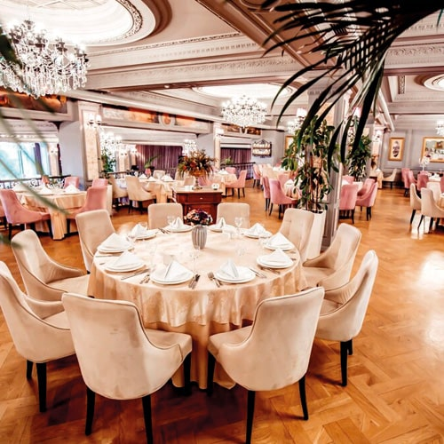

Nosso Ambiente

O restaurante italiano Uny, situado no charmoso bairro do Leblon, no Rio de Janeiro, recentemente conquistou sua primeira estrela Michelin, um reconhecimento que destaca sua excelência culinária. Este feito notável tem atraído a atenção de críticos gastronômicos, que elogiam a experiência única proporcionada pelo Uny. Com uma atmosfera intimista e um serviço que se destaca pela atenção aos detalhes, o Uny oferece aos seus clientes uma experiência gastronômica memorável. O menu, cuidadosamente elaborado por chefs de renome internacional, é uma fusão perfeita de autenticidade e inovação. Cada prato é uma obra de arte que reflete a paixão e a criatividade dos chefs, combinando ingredientes tradicionais italianos com técnicas modernas de culinária. Além disso, o ambiente acolhedor do Uny, com sua decoração elegante e aconchegante, proporciona o cenário ideal para desfrutar de uma refeição inesquecível. Seja para um jantar romântico, uma celebração especial ou simplesmente para apreciar a alta gastronomia, o Uny se destaca como um destino imperdível para os amantes da boa comida.
Rua das Flores, 123, Leblon, Rio de Janeiro, RJ, 22430-000
Tel: (21) 3456-7890
E-mail: unyfood@gmail.com